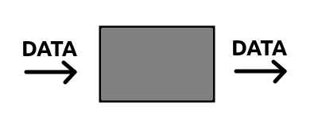
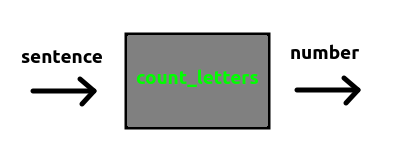

If you're in an adventurous mood, you may have tried modifying the node we created in the previous chapter; changing its name or description, perhaps, or even trying a different texture.
If you're feeling both adventurous and lucky, your changes will have worked first time; otherwise, you'll see an incomprehensible error message and Minetest will refuse to start your mod.
In this chapter, we'll cover a few basic concepts in the Lua programming language, so you can understand all of the code used so far. When you are ready to start creating your own nodes, you will get fewer error messages.
The first thing to talk about is the function.
We can think of a function like a black box. We put data into the function, and shortly afterwards, some other data comes out.

Every function has a name describing what it does. For example, imagine a function which counts the number of letters in a sentence. The data going in is the sentence, and the data coming out is a number, the total number of letters in the sentence.
We might call this function count_letters. (This name is not a single word, but you can join two or more words together with underlines/underscores.)

Because the function is a black box, we don't know or even care what is happening inside. Once the function has been written and tested, we can forget about those details. From then on, we only care about the data coming in and the data going out.
You can write your own functions, or borrow functions written by other people, or you can use one of the many functions provided by Minetest itself.
One such function registers a new node. The data going in includes a name, a description, probably some images, and so on. The data coming out is a new node that can be used in the game.
Here is the name of the function.
minetest.register_node
You'll notice there are two components, joined by a dot. The component on the left tells us that this function is provided by Minetest, and is not something you wrote yourself. The component on the right tells us what the function does.
We need to send some data to the function. The data is always inside a pair of brackets.
minetest.register_node()
Some functions have a single piece of data, for example a single number.
do_something(100)
Other functions have two or more pieces of data, They are written as a list, separated by commas.
do_something(100, 200, 300)
When the data is text, we have to put that text inside a pair of quotes. This is called a string.
"Hello world"
A string can be inside a pair of double quotes, or inside a pair of single quotes. (Choose the one you prefer and use it consistently.)
do_something("Hello world")
do_something('Hello world')
Now, the function for creating nodes expects exactly two pieces of data, in the following order:
minetest.register_node(STRING, TABLE)
We'll talk about tables in a moment. The first item, which is a string, is the name of the new node.
Here are some node names from the default mod:
"default:stone"
"default:dirt"
"default:dirt_with_grass"
As you can see, there are two components, joined with a colon. The first component is the name of the parent mod.
The second component is a name for the node itself. If you need two or more words, use underlines/underscores, don't use spaces. (The following node name is not valid.)
"default:dirt with grass"
The node we created in the previous chapter belongs to a mod called hello.
"hello:happy_block"
So, the first part of our function looks like this:
minetest.register_node("hello:happy_block", TABLE)
Now let's talk about tables.
A table is just like a dictionary. In an English dictionary, we have a list of words:
aardvark
abbot
accountant
add
Every word has a definition:
aardvark = Medium-sized insectivore with protruding nasal implement
abbot = Someone who lives in an abbey
accountant = Someone who is not good at sums
adding = What accountants are not good at
In a real dictionary, the words are in alphabetical order. However, in a Lua table, the order doesn't matter.
accountant = Someone who is not good at sums
abbot = Someone who lives in an abbey
aardvark = Medium-sized insectivore with protruding nasal implement
adding = What accountants are not good at
The order doesn't matter, but just as in a real dictionary, each word only appears once. If we add aardvark a second time, the new definition replaces the old one.
aardvark = THIS DEFINITION WILL BE REPLACED
abbot = Someone who lives in an abbey
accountant = Someone who is not good at sums
adding = What accountants are not good at
aardvark = Something that likes eating insects
A Lua table starts with a pair of curly brackets.
{}
We can list as many words and definitions as want, separating them with commas.
{ WORD = DEFINITION, WORD = DEFINITION, WORD = DEFINITION }
When dictionaries become long, we usually split them across multiple lines. Regardless of how many lines we use, Lua knows that the table starts at the first bracket, and ends at the last one.
{
WORD = DEFINITION,
WORD = DEFINITION,
WORD = DEFINITION,
}
Now we can add the actual words and definitions to this table.
{
aardvark = "Medium-sized insectivore with protruding nasal implement",
abbot = "Someone who lives in an abbey",
accountant = "Someone who is not good at sums",
adding = "What accountants are not good at",
}
Note that the words are not strings, but that the definitions are. This is a quirk of Lua tables; try not to worry about it.
Now, imagine a different kind of table, one that tells Minetest how to create a node. We might start by giving it a description.
{
description = "A Very Happy Block",
}
We can also specify the sound effect.
{
description = "A Very Happy Block",
sounds = default.node_sound_stone_defaults(),
}
It's not worth analysing the second line; just copy and paste it, every time you need a node that resembles stone. If you want a node that sounds like dirt, sand or glass, copy and paste one of these lines instead:
sounds = default.node_sound_dirt_defaults(),
sounds = default.node_sound_sand_defaults(),
sounds = default.node_sound_glass_defaults(),
There is a special kind of table called a list. We might use it to record the results of a race:
{ 1 = "Alice", 2 = "Bob", 3 = "Charlie" }
Lists are so useful, that Lua allows us to miss out the number altogether. The line above is exactly the same as the line below.
{ "Alice", "Bob", "Charlie" }
Whenever you see a table with no equals signs, you'll know that you are looking at a list.
A cube has six faces. If we want, we can use a different image for all six faces.
Minetest expects a list in the following format:
{ TOP, BOTTOM, FRONT, BACK, LEFT, RIGHT }
Often the same image is used on multiple faces. For example, the TOP may be unique, but all other faces might be the same as the BOTTOM face. We could do this:
{ TOP, BOTTOM, BOTTOM, BOTTOM, BOTTOM, BOTTOM }
But it's easier to miss out the repeating faces, because Minetest will keep using the last image until it runs out of faces:
{ TOP, BOTTOM }
In particular, if all six faces are identical, we only need to specify one image:
{ TOP }
A table can contain other tables (or lists), so we can add the list inside the existing table:
{
description = "A Very Happy Block",
tiles = { "top.png", "bottom.png", "front.png", "back.png", "left.png", "right.png" },
sounds = default.node_sound_stone_defaults(),
}
If we had a smaller selection of images available to us, we might have added any of the following lines instead:
tiles = { "top.png", "bottom.png", "front.png", "front.png", "front.png", "front.png" },
tiles = { "top.png", "bottom.png", "front.png" },
tiles = { "top.png" },
There is one more line to add. While playing Minetest, you will have noticed that some blocks are quick to dig, and others take longer. Some blocks may need a certain tool (like a pickaxe for digging stone).
Nodes behave in different ways because they belong to different groups. Stone must be dug with a pickaxe, so it belongs to the cracky group. Tree trunks are quicker to dig with an axe, so they belong to the choppy group. Dirt and sand are quicker to dig with shovels, so they belong to the crumbly group.
We use a table to specify the groups. If we want our node to behave like stone, we would add it to the cracky group.
groups = { cracky = 3 },
The number represents the node's hardness. 3 can be used for a softer node that we might dig using a wooden pickaxe. We would use 2 for a harder node, or 1 for a node so hard that a diamond pickaxe is required.
If we want our node to behave like wood, then we use the choppy group instead.
groups = { choppy = 3 },
And for nodes that resemble dirt or sand, we use the crumbly group.
groups = { crumbly = 3 },
Perhaps you might want a node that can be dug using either a pickaxe, an axe or a shovel. In that case, we can specify all the groups we need together in the same table.
groups = { cracky = 3, choppy = 3, crumbly = 3 },
Putting all of this together, we get the following table:
{
description = "A Very Happy Block",
tiles = { "hello_happy.png" },
groups = { cracky = 3 },
sounds = default.node_sound_stone_defaults(),
}
You'll remember that the function to create new nodes is in the following format:
minetest.register_node(STRING, TABLE)
In other words:
minetest.register_node("hello:happy_block", {})
We can now insert the full table. It's customary to add a new line after the first bracket, and another one before the last bracket.
minetest.register_node("hello:happy_block", {
description = "A Very Happy Block",
tiles = { "hello_happy.png" },
groups = {cracky = 3},
sounds = default.node_sound_stone_defaults(),
})
That is exactly the same code you used in the previous chapter!
Now you know how it all works, you can copy and paste this block of code to create as many different nodes as you want, each time using different names, descriptions, images, groups and sound effects.
This has been a long chapter, but the good news is that all the same concepts apply when you want to add a craft recipe, or a tool, or a biome, or an ore. Those chapters will all be quite short!